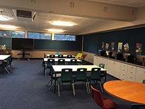

Technology at Emmaus Christian School
Students at Emmaus have access to technology to enhance the teaching and learning in the classroom.
Primary classes have 10 school owned iPads in each room and the Secondary school runs a compulsory BYOD hybrid program. These devices are not expected to replace the use of bo0ks, pencils/pens or face to face interaction between students and teachers.
Years 7 and 8 supply their own iPads while students in Years 9 and 10 are less restricted in the type of device they use.
All students at Emmaus sign User Agreement Documents that clearly outline the expectations and consequences for the use of technology at school.